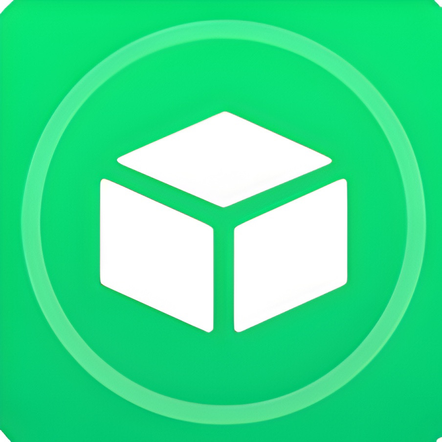

JTISVN REPO (Roothide/Rootless)

Hỗ trợ iOS: iOS 11+.
Hỗ trợ thiết bị: Tất cả các thiết bị iOS.
Tính năng: Ký IPA trực tiếp trên thiết bị, sử dụng chứng chỉ miễn phí, cài đặt nhanh.
Ưu điểm: Không cần PC, tiện lợi, hỗ trợ nhiều tính năng nâng cao.
Nhược điểm: Yêu cầu Apple ID, phụ thuộc vào chứng chỉ nhà phát triển.
Hỗ trợ iOS: iOS 12+.
Hỗ trợ thiết bị: Tất cả các thiết bị iOS.
Tính năng: Ký IPA trên iOS, cài đặt IPA, làm mới tự động.
Ưu điểm: Miễn phí, tích hợp tốt với hệ sinh thái Apple.
Nhược điểm: Yêu cầu AltServer trên macOS/Windows, cần Apple ID, phải làm mới ứng dụng mỗi 7 ngày (hoặc 365 ngày với tài khoản nhà phát triển).
Hỗ trợ iOS: iOS 14+.
Hỗ trợ thiết bị: Tất cả các thiết bị iOS.
Tính năng: Ký IPA trực tiếp trên thiết bị, không cần máy tính sau cài đặt ban đầu, VPN tích hợp.
Ưu điểm: Độc lập, tiện lợi, tự động làm mới qua Wi-Fi.
Nhược điểm: Yêu cầu Apple ID, cần kết nối Wi-Fi để làm mới.
Hỗ trợ iOS: iOS 7+.
Hỗ trợ thiết bị: Tất cả các thiết bị iOS.
Tính năng: Ký IPA trên máy tính, hỗ trợ Wi-Fi sideloading, tiêm tweak, hỗ trợ Apple ID miễn phí.
Ưu điểm: Linh hoạt, dễ dùng, hỗ trợ nhiều phiên bản iOS cũ.
Nhược điểm: Yêu cầu máy tính (macOS/Windows) để cài đặt và làm mới.

GBoxHỗ trợ iOS: iOS 14+.
Hỗ trợ thiết bị: Tất cả các thiết bị iOS.
Tính năng: Ký IPA trên thiết bị, cài đặt IPA, không cần PC, hỗ trợ chứng chỉ tùy chỉnh.
Ưu điểm: Giao diện đơn giản, độc lập, không cần máy tính.
Nhược điểm: Yêu cầu Apple ID, phụ thuộc vào chứng chỉ nhà phát triển.
Hỗ trợ iOS: iOS 14+.
Hỗ trợ thiết bị: Tất cả các thiết bị iOS.
Tính năng: Ký IPA dựa trên AltStore/SideStore, cài đặt IPA, giao diện đẹp.
Ưu điểm: Tích hợp tốt, ổn định, dễ sử dụng.
Nhược điểm: Yêu cầu PC ban đầu để cài đặt, phụ thuộc vào chứng chỉ nhà phát triển.
Hỗ trợ iOS: iOS 13+.
Hỗ trợ thiết bị: Tất cả các thiết bị iOS.
Tính năng: Ký IPA mã nguồn mở, hỗ trợ Apple Developer Program, tùy chỉnh chứng chỉ, cài đặt IPA.
Ưu điểm: Minh bạch, linh hoạt, kiểm soát cao.
Nhược điểm: Yêu cầu Apple ID, có thể phức tạp hơn cho người dùng mới.
Hỗ trợ iOS: iOS 14+.
Hỗ trợ thiết bị: Tất cả các thiết bị iOS.
Tính năng: Ký IPA trực tiếp trên thiết bị, hỗ trợ Apple Developer Program, tùy chỉnh chứng chỉ, cài đặt IPA.
Ưu điểm: Không cần PC, ổn định, linh hoạt, hỗ trợ nhiều tính năng chuyên sâu.
Nhược điểm: Yêu cầu Apple ID, phụ thuộc vào chứng chỉ nhà phát triển.